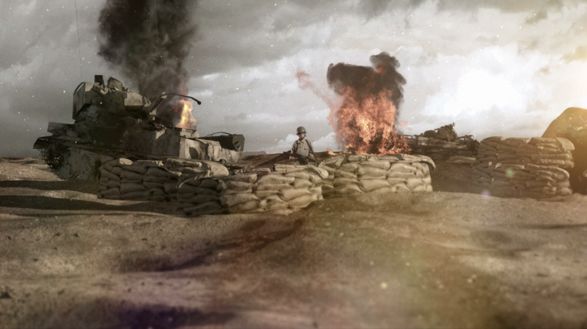

Saving the Enemy
prototype
If you were in his shoes, would you follow orders and go into the bunker, or escape now, knowing your safety would be guaranteed?
John hears someone moving. Would you defend yourself and fire your rifle or hold fire approach further to investigate?
John sees the wounded soldier. In this situation would you shoot the injured soldier now, or approach closer to investigate his injuries?
But do you have all the facts? Switch to Chris's point of view or continue with John.
Would you attempt to save this soldier and risk being killed for treason, or follow orders and kill him?
Zehad helps Najah using his medical supplies.